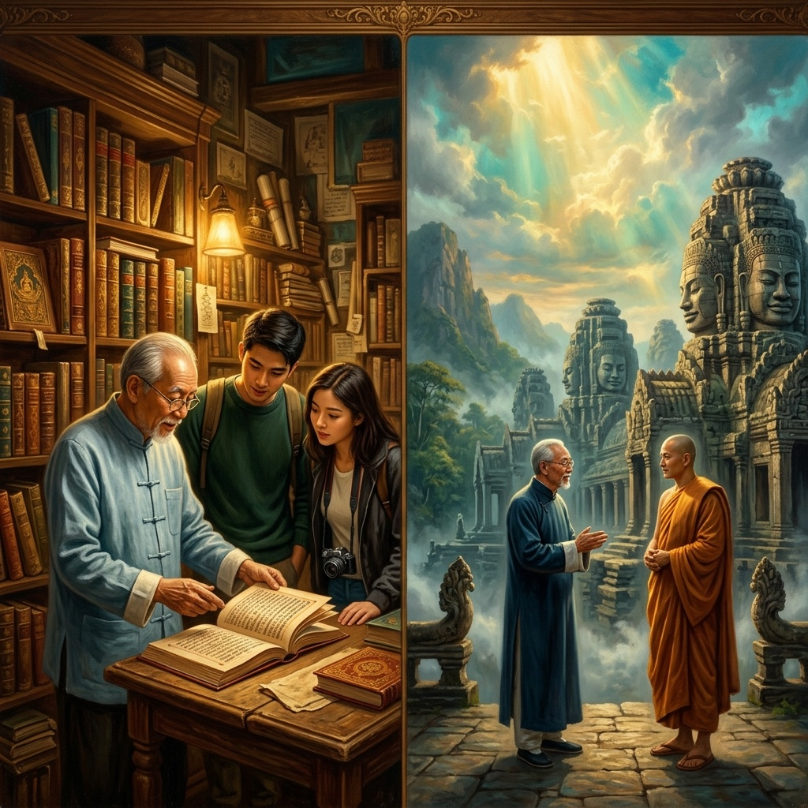
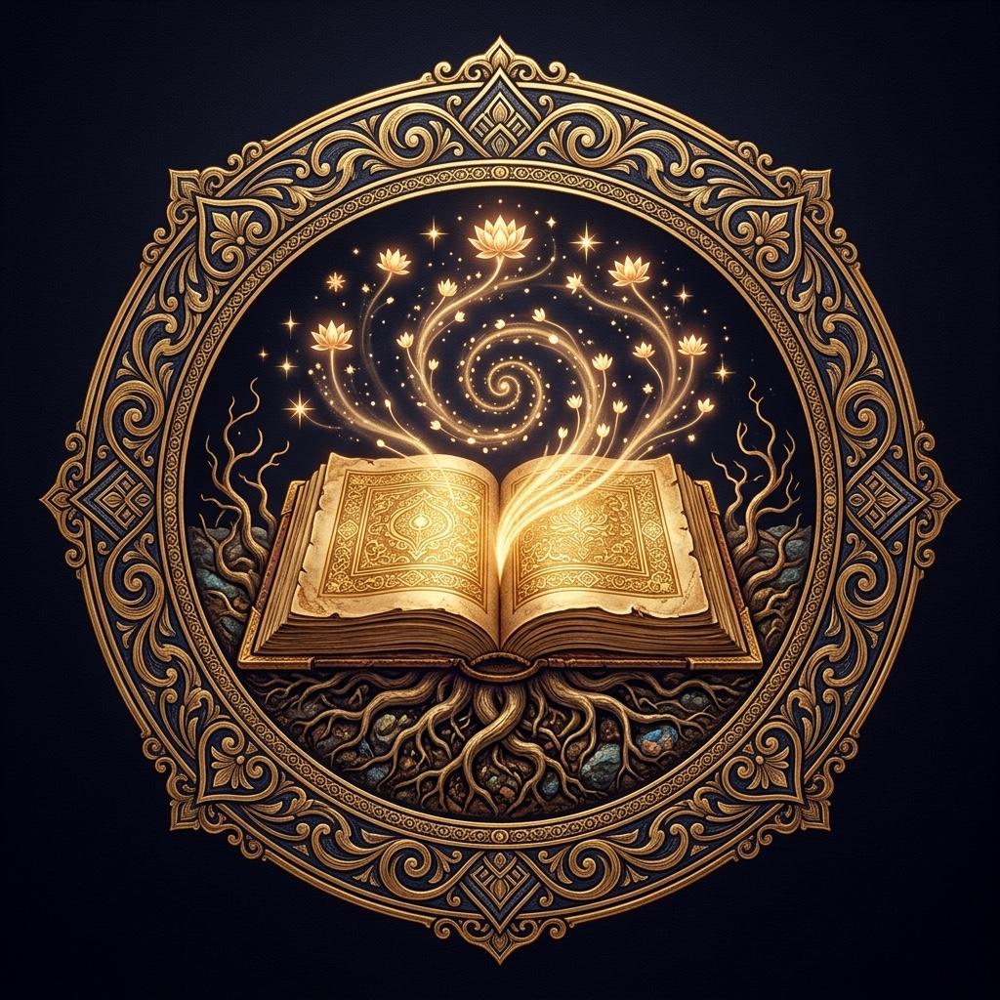
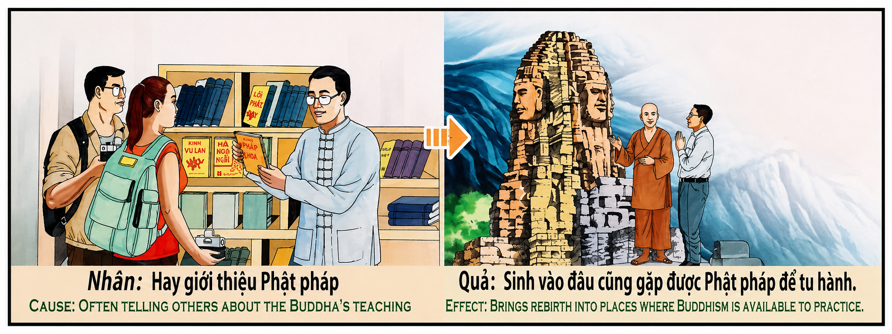

La Semilla del Dharma y el Renacimiento del BuscadorThe Seed of Dharma and the Seeker's RebirthIl Seme del Dharma e la Rinascita del Cercatore法之种子与求道者的重生بذرة الدارما وولادة الباحث الجديدةСемя Дхармы и Перерождение ИскателяDer Same des Dharma und die Wiedergeburt des SuchendenLa Graine du Dharma et la Renaissance du Chercheur法の種と求道者の転生A Semente do Dharma e o Renascimento do BuscadorHạt Giống Pháp Và Sự Tái Sinh Của Người Tìm Đạo
"Cada palabra de sabiduría que siembras con amor sincero en el corazón de otro ser humano es una semilla que el universo no olvida. El karma no distingue entre religiones ni entre pasiones: distingue entre la pureza del impulso y la indiferencia del silencio. Quien comparte la verdad que ha iluminado su alma crea un campo magnético invisible que, en esta vida o en las siguientes, lo atraerá inevitablemente hacia los lugares, los maestros y las circunstancias exactas donde esa sabiduría pueda florecer y ser vivida en plenitud.""Every word of wisdom that you sow with sincere love in the heart of another human being is a seed that the universe never forgets. Karma does not distinguish between religions or passions: it distinguishes between the purity of the impulse and the indifference of silence. He who shares the truth that has illuminated his soul creates an invisible magnetic field that, in this life or in future ones, will inevitably draw him toward the exact places, teachers, and circumstances where that wisdom may flourish and be lived in fullness.""Ogni parola di saggezza che semini con amore sincero nel cuore di un altro essere umano è un seme che l'universo non dimentica. Il karma non distingue tra religioni o passioni: distingue tra la purezza dell'impulso e l'indifferenza del silenzio. Chi condivide la verità che ha illuminato la propria anima crea un campo magnetico invisibile che, in questa vita o nelle successive, lo attirerà inevitabilmente verso i luoghi, i maestri e le circostanze esatte in cui quella saggezza potrà fiorire ed essere vissuta in pienezza.""你以真诚的爱在另一个人心中播下的每一句智慧之言，都是宇宙永远不会忘记的种子。业力不区分宗教或激情：它区分的是冲动的纯净与沉默的冷漠。分享照亮自己灵魂的真理的人，会创造一个无形的磁场，在今生或来世，必然会将他吸引到那些智慧能够绽放并被充分体验的确切地方、导师和环境中。""كل كلمة حكمة تزرعها بحب صادق في قلب إنسان آخر هي بذرة لا ينساها الكون أبدًا. الكارما لا تميز بين الأديان أو العواطف: إنها تميز بين نقاء الدافع ولامبالاة الصمت. من يشارك الحقيقة التي أنارت روحه يخلق حقلاً مغناطيسيًا غير مرئي، في هذه الحياة أو في الحياة القادمة، سيجذبه حتمًا إلى الأماكن والمعلمين والظروف الدقيقة حيث يمكن لتلك الحكمة أن تزدهر وتُعاش بالكامل."«Каждое слово мудрости, посеянное с искренней любовью в сердце другого человека, — это семя, которое вселенная никогда не забывает. Карма не различает религий и страстей: она различает чистоту побуждения и безразличие молчания. Тот, кто делится истиной, осветившей его душу, создает невидимое магнитное поле, которое в этой или в следующих жизнях неизбежно притянет его к тем самым местам, учителям и обстоятельствам, где эта мудрость сможет расцвести и быть прожитой во всей полноте.»„Jedes Wort der Weisheit, das du mit aufrichtiger Liebe in das Herz eines anderen Menschen säst, ist ein Same, den das Universum nie vergisst. Karma unterscheidet nicht zwischen Religionen oder Leidenschaften: es unterscheidet zwischen der Reinheit des Impulses und der Gleichgültigkeit des Schweigens. Wer die Wahrheit teilt, die seine Seele erleuchtet hat, schafft ein unsichtbares Magnetfeld, das ihn in diesem oder in zukünftigen Leben unweigerlich zu den genauen Orten, Lehrern und Umständen hinziehen wird, an denen diese Weisheit erblühen und in Fülle gelebt werden kann.""Chaque mot de sagesse que tu sèmes avec un amour sincère dans le cœur d'un autre être humain est une graine que l'univers n'oublie jamais. Le karma ne distingue pas entre les religions ou les passions : il distingue entre la pureté de l'impulsion et l'indifférence du silence. Celui qui partage la vérité qui a illuminé son âme crée un champ magnétique invisible qui, dans cette vie ou dans les suivantes, l'attirera inévitablement vers les lieux, les maîtres et les circonstances exactes où cette sagesse pourra fleurir et être vécue pleinement."「あなたが誠実な愛をもって他の人間の心に蒔く知恵の一言一言は、宇宙が決して忘れない種です。カルマは宗教や情熱を区別しません。それは衝動の純粋さと沈黙の無関心を区別するのです。自らの魂を照らした真理を分かち合う者は、目に見えない磁場を創り出します。それは今生か来世において、必然的にその知恵が花開き、十全に生きることのできる正確な場所、師、環境へと、その人を引き寄せるでしょう。」"Cada palavra de sabedoria que semeias com amor sincero no coração de outro ser humano é uma semente que o universo nunca esquece. O karma não distingue entre religiões ou paixões: distingue entre a pureza do impulso e a indiferença do silêncio. Quem partilha a verdade que iluminou a sua alma cria um campo magnético invisível que, nesta vida ou nas seguintes, inevitavelmente o atrairá para os lugares, mestres e circunstâncias exatas onde essa sabedoria poderá florescer e ser vivida em plenitude.""Mỗi lời trí tuệ bạn gieo với tình yêu chân thành vào trái tim một con người khác là một hạt giống mà vũ trụ không bao giờ quên. Nghiệp quả không phân biệt giữa các tôn giáo hay đam mê: nó phân biệt giữa sự thuần khiết của xung lực và sự thờ ơ của im lặng. Người chia sẻ chân lý đã soi sáng linh hồn mình tạo ra một trường từ vô hình mà, trong kiếp này hoặc kiếp sau, chắc chắn sẽ thu hút họ đến đúng những nơi, những bậc thầy và hoàn cảnh nơi trí tuệ ấy có thể nở hoa và được sống trọn vẹn."
Compartir las enseñanzas sagradas que han iluminado nuestro camino interior con otros seres humanos —ya sea la sabiduría de Buda, las parábolas de Cristo, los versos del Corán, la filosofía del Tao, o incluso una pasión profunda y honesta por la ciencia, la música o la aviación— constituye uno de los actos kármicos de mayor potencia transformadora en el universo. El relieve antiguo del templo ilustra este principio con la claridad prístina de la ley de causa y efecto: quien habitualmente comparte las enseñanzas del Dharma (o cualquier verdad trascendental genuina) con los demás, renacerá en un lugar donde podrá encontrar y practicar esas mismas enseñanzas.
La primera dimensión de esta ley es el principio de resonancia kármica o «atracción por afinidad vibracional». En la física del karma, cada pensamiento, palabra y acción emite una frecuencia sutil que queda grabada en el registro cósmico del alma (el «alaya-vijnana» o consciencia-almacén del budismo, equivalente al «Libro de la Vida» en la tradición cristiana). Cuando una persona comparte con entusiasmo y amor genuino una verdad espiritual, no solo transmite información intelectual: está emitiendo una onda de frecuencia elevada que se imprime en su propio campo kármico como un sello de oro. En vidas futuras, esta frecuencia acumulada actúa como un imán cósmico que atrae al alma hacia el entorno exacto donde esa misma vibración resuena —ya sea un monasterio en las montañas de Birmania, una catedral medieval en Francia, una familia de astrofísicos en Japón, o un taller de laudería en Cremona—. El universo no juzga el «nombre» de la sabiduría; juzga la pureza del amor con que fue compartida.
La segunda dimensión es la multiplicación fractal de la semilla: el efecto exponencial del Dharma compartido. Una verdad espiritual, una vez depositada con ternura en un corazón receptivo, no permanece estática: germina, crece, se ramifica y genera su propia cosecha de luz. Quien enseña a un alma a meditar, a leer las escrituras, a observar la naturaleza con reverencia o a tocar un instrumento con devoción, no solo cambia la vida de esa persona: altera la trayectoria kármica de todas las personas que esa alma tocará a lo largo de sus múltiples vidas. Es una reacción en cadena de luz. Por eso, el efecto kármico de la enseñanza genuina es exponencial y no lineal: una sola semilla de Dharma sembrada con amor puede convertirse, a lo largo de los eones, en un bosque de iluminación que cobija a millones de seres.
La tercera dimensión es la más profunda y universal: la ley no es exclusiva de ninguna religión, sino del amor incondicional a la verdad. Este principio kármico trasciende todas las fronteras religiosas, culturales y disciplinarias. Si un astrónomo apasionado comparte con un niño su fascinación por las estrellas, ese niño puede renacer en una familia de ingenieros aeroespaciales. Si un violinista entrega con devoción la belleza de Bach a un auditorio, su alma se magnetizará hacia vidas donde la música sagrada florezca. Si un médico comparte con humildad los misterios de la curación con sus discípulos, renacerá rodeado de los templos de la medicina. La clave no es el nombre de la doctrina que se comparte, sino tres cualidades esenciales: (1) la autenticidad del impulso (que nazca del amor y no del ego), (2) la generosidad desinteresada (que se dé sin esperar retribución) y (3) la humildad del mensajero (que el instructor se considere siempre un canal, nunca la fuente). Cuando estas tres condiciones se cumplen, el campo magnético kármico es imparable, y el universo garantiza que el alma encontrará, vida tras vida, los templos exactos donde su corazón pueda seguir aprendiendo y sirviendo.
Sharing the sacred teachings that have illuminated our inner path with other human beings—whether the wisdom of the Buddha, the parables of Christ, the verses of the Quran, the philosophy of the Tao, or even a deep and honest passion for science, music, or aviation—constitutes one of the most powerfully transformative karmic acts in the universe. The ancient temple relief illustrates this principle with the pristine clarity of cause and effect: he who habitually shares the teachings of the Dharma (or any genuine transcendental truth) with others will be reborn in a place where he can find and practice those very same teachings.
The first dimension of this law is the principle of karmic resonance, or 'attraction by vibrational affinity'. In the physics of karma, every thought, word, and action emits a subtle frequency that is recorded in the cosmic register of the soul (the 'alaya-vijnana' or storehouse-consciousness of Buddhism, equivalent to the 'Book of Life' in the Christian tradition). When a person shares a spiritual truth with genuine enthusiasm and love, they are not merely transmitting intellectual information: they are emitting a high-frequency wave that imprints upon their own karmic field like a golden seal. In future lives, this accumulated frequency acts as a cosmic magnet that draws the soul toward the exact environment where that same vibration resonates—be it a monastery in the mountains of Burma, a medieval cathedral in France, a family of astrophysicists in Japan, or a luthier's workshop in Cremona. The universe does not judge the 'name' of the wisdom; it judges the purity of the love with which it was shared.
The second dimension is the fractal multiplication of the seed: the exponential effect of shared Dharma. A spiritual truth, once gently deposited in a receptive heart, does not remain static: it germinates, grows, branches out, and generates its own harvest of light. He who teaches a soul to meditate, to read the scriptures, to observe nature with reverence, or to play an instrument with devotion, does not merely change that person's life: he alters the karmic trajectory of every person that soul will touch across its multiple lifetimes. It is a chain reaction of light. This is why the karmic effect of genuine teaching is exponential, not linear: a single seed of Dharma sown with love can become, across the eons, a forest of enlightenment sheltering millions of beings.
The third dimension is the deepest and most universal: this law is not exclusive to any religion, but to the unconditional love of truth. This karmic principle transcends all religious, cultural, and disciplinary boundaries. If a passionate astronomer shares with a child his fascination with the stars, that child may be reborn into a family of aerospace engineers. If a violinist devoutly delivers the beauty of Bach to an audience, their soul will be magnetized toward lives where sacred music flourishes. If a doctor humbly shares the mysteries of healing with his disciples, he will be reborn surrounded by the temples of medicine. The key is not the name of the doctrine shared, but three essential qualities: (1) the authenticity of the impulse (born of love, not ego), (2) selfless generosity (given without expectation of return), and (3) the humility of the messenger (the teacher must always consider themselves a channel, never the source). When these three conditions are met, the karmic magnetic field is unstoppable, and the universe guarantees that the soul will find, life after life, the exact temples where its heart can continue learning and serving.
Condividere gli insegnamenti sacri che hanno illuminato il nostro cammino interiore con altri esseri umani — che si tratti della saggezza del Buddha, delle parabole di Cristo, dei versetti del Corano, della filosofia del Tao o persino di una passione profonda e sincera per la scienza, la musica o l'aviazione — costituisce uno degli atti karmici più potentemente trasformativi dell'universo. Il rilievo dell'antico tempio illustra questo principio con la chiarezza cristallina della legge di causa ed effetto: chi condivide abitualmente gli insegnamenti del Dharma (o qualsiasi genuina verità trascendentale) con gli altri, rinascerà in un luogo dove potrà trovare e praticare quegli stessi insegnamenti.
La prima dimensione di questa legge è il principio di risonanza karmica o «attrazione per affinità vibrazionale». Nella fisica del karma, ogni pensiero, parola e azione emette una frequenza sottile che si registra nel registro cosmico dell'anima. Quando una persona condivide con entusiasmo e amore genuino una verità spirituale, non trasmette solo informazioni intellettuali: emette un'onda di alta frequenza che si imprime nel suo campo karmico come un sigillo d'oro. Nelle vite future, questa frequenza accumulata agisce come un magnete cosmico che attrae l'anima verso l'ambiente esatto dove quella stessa vibrazione risuona.
La seconda dimensione è la moltiplicazione frattale del seme: l'effetto esponenziale del Dharma condiviso. Una verità spirituale, una volta depositata con tenerezza in un cuore ricettivo, non rimane statica: germoglia, cresce, si ramifica e genera il proprio raccolto di luce. Chi insegna a un'anima a meditare, a leggere le scritture o ad osservare la natura con riverenza, non cambia solo la vita di quella persona: altera la traiettoria karmica di tutti coloro che quell'anima toccherà nel corso delle sue molteplici vite.
La terza dimensione è la più profonda e universale: questa legge non è esclusiva di nessuna religione, ma dell'amore incondizionato per la verità. Questo principio karmico trascende ogni confine religioso, culturale e disciplinare. La chiave non è il nome della dottrina condivisa, ma tre qualità essenziali: (1) l'autenticità dell'impulso (nato dall'amore, non dall'ego), (2) la generosità disinteressata (data senza aspettarsi nulla in cambio) e (3) l'umiltà del messaggero (l'istruttore si consideri sempre un canale, mai la fonte).
与其他人分享那些照亮我们内心道路的神圣教导——无论是佛陀的智慧、基督的比喻、古兰经的经文、道的哲学，还是对科学、音乐或航空的深沉而真诚的热爱——构成了宇宙中最具有转化力量的业力行为之一。古庙的浮雕以因果法则的纯净清晰度阐释了这一原则：经常与他人分享法的教导（或任何真正超越性的真理）的人，将重生在一个能够找到并实践那些教导的地方。
这条法则的第一个维度是业力共振原则，即"振动亲和力吸引"。在业力物理学中，每一个思想、言语和行动都会发出微妙的频率，记录在灵魂的宇宙档案中。当一个人以真诚的热情和爱分享精神真理时，他不仅仅是在传递智识信息：他正在发射一种高频波，像金色的印章一样印在自己的业力场上。在未来的生命中，这种累积的频率就像一块宇宙磁铁，将灵魂吸引到那个相同振动共鸣的确切环境中。
第二个维度是种子的分形倍增：共享法的指数效应。一个精神真理，一旦温柔地存放在一颗接受的心中，就不会保持静止：它发芽、生长、分枝并产生自己的光之收获。教导一个灵魂冥想、阅读经典或以敬畏之心观察自然的人，不仅改变了那个人的生命：他改变了那个灵魂在多世生命中将触及的所有人的业力轨迹。
第三个维度是最深刻和最普遍的：这条法则不属于任何宗教，而属于对真理的无条件之爱。这一业力原则超越了所有宗教、文化和学科的界限。关键不在于分享的教义的名称，而在于三个基本品质：(1) 冲动的真实性（源于爱而非自我），(2) 无私的慷慨（给予而不期望回报），以及 (3) 信使的谦卑（教导者始终视自己为渠道，而非源头）。
مشاركة التعاليم المقدسة التي أنارت طريقنا الداخلي مع البشر الآخرين - سواء كانت حكمة بوذا أو أمثال المسيح أو آيات القرآن أو فلسفة الطاو أو حتى شغف عميق وصادق بالعلم أو الموسيقى أو الطيران - تشكل أحد أقوى الأفعال الكارمية تحويلاً في الكون. يوضح نقش المعبد القديم هذا المبدأ بوضوح بكر لقانون السبب والنتيجة: من يشارك باستمرار تعاليم الدارما (أو أي حقيقة متعالية حقيقية) مع الآخرين، سيولد من جديد في مكان يمكنه فيه العثور على تلك التعاليم وممارستها.
البعد الأول لهذا القانون هو مبدأ الرنين الكارمي أو "الجذب بالتقارب الذبذبي". في فيزياء الكارما، كل فكرة وكلمة وفعل يبعث تردداً دقيقاً يُسجل في السجل الكوني للروح. عندما يشارك شخص ما حقيقة روحية بحماس وحب صادقين، فإنه لا ينقل مجرد معلومات فكرية: إنه يبعث موجة عالية التردد تنطبع في حقله الكارمي كختم ذهبي. في الحيوات المستقبلية، يعمل هذا التردد المتراكم كمغناطيس كوني يجذب الروح نحو البيئة الدقيقة حيث يتردد نفس الاهتزاز.
البعد الثاني هو التكاثر الفركتالي للبذرة: التأثير الأسي للدارما المشتركة. الحقيقة الروحية، بمجرد أن تُودع بلطف في قلب متقبل، لا تبقى ثابتة: إنها تنبت وتنمو وتتفرع وتولد حصادها الخاص من النور. من يعلم روحاً التأمل أو قراءة الكتب المقدسة أو مراقبة الطبيعة بإجلال، لا يغير فقط حياة ذلك الشخص: بل يغير المسار الكارمي لكل شخص ستلمسه تلك الروح عبر حيواتها المتعددة.
البعد الثالث هو الأعمق والأكثر شمولية: هذا القانون ليس حكراً على أي دين، بل على الحب غير المشروط للحقيقة. هذا المبدأ الكارمي يتجاوز كل الحدود الدينية والثقافية والتخصصية. المفتاح ليس اسم العقيدة المُشاركة، بل ثلاث صفات جوهرية: (1) صدق الدافع (نابع من الحب لا من الأنا)، (2) الكرم المنزه عن المصلحة (يُعطى دون انتظار مقابل)، و(3) تواضع الرسول (المعلم يعتبر نفسه دائماً قناة، لا المصدر).
Делиться священными учениями, осветившими наш внутренний путь, с другими людьми — будь то мудрость Будды, притчи Христа, аяты Корана, философия Дао или даже глубокая и искренняя страсть к науке, музыке или авиации — является одним из самых мощных трансформирующих кармических действий во вселенной. Барельеф древнего храма иллюстрирует этот принцип с кристальной ясностью закона причины и следствия: тот, кто регулярно делится учениями Дхармы (или любой подлинной трансцендентной истиной) с другими, переродится в месте, где сможет найти и практиковать эти же учения.
Первое измерение этого закона — принцип кармического резонанса, или «притяжение по вибрационному сродству». В физике кармы каждая мысль, слово и действие излучают тонкую частоту, записываемую в космическом реестре души. Когда человек делится духовной истиной с искренним энтузиазмом и любовью, он не просто передает интеллектуальную информацию: он излучает высокочастотную волну, которая отпечатывается в его кармическом поле, подобно золотой печати. В будущих жизнях эта накопленная частота действует как космический магнит, притягивающий душу к тому самому окружению, где резонирует та же вибрация.
Второе измерение — фрактальное умножение семени: экспоненциальный эффект разделённой Дхармы. Духовная истина, однажды бережно посеянная в восприимчивое сердце, не остаётся неподвижной: она прорастает, растёт, ветвится и порождает собственный урожай света. Тот, кто учит душу медитировать, читать писания или созерцать природу с благоговением, не просто меняет жизнь этого человека: он изменяет кармическую траекторию всех людей, которых эта душа коснётся на протяжении множества своих жизней.
Третье измерение — самое глубокое и универсальное: этот закон не принадлежит ни одной религии, а принадлежит безусловной любви к истине. Этот кармический принцип выходит за все религиозные, культурные и дисциплинарные границы. Ключ не в названии доктрины, а в трёх существенных качествах: (1) подлинность побуждения (рождённое из любви, а не из эго), (2) бескорыстная щедрость (отдавать без ожидания отдачи) и (3) смирение вестника (учитель всегда считает себя каналом, а не источником).
Die heiligen Lehren, die unseren inneren Weg erleuchtet haben, mit anderen Menschen zu teilen — sei es die Weisheit Buddhas, die Gleichnisse Christi, die Verse des Korans, die Philosophie des Tao oder sogar eine tiefe und ehrliche Leidenschaft für Wissenschaft, Musik oder Luftfahrt — stellt eine der mächtigsten transformativen karmischen Handlungen im Universum dar. Das antike Tempelrelief veranschaulicht dieses Prinzip mit der unberührten Klarheit des Gesetzes von Ursache und Wirkung: Wer regelmäßig die Lehren des Dharma (oder jede echte transzendentale Wahrheit) mit anderen teilt, wird an einem Ort wiedergeboren, wo er diese Lehren finden und praktizieren kann.
Die erste Dimension dieses Gesetzes ist das Prinzip der karmischen Resonanz oder „Anziehung durch Schwingungsaffinität". In der Physik des Karma sendet jeder Gedanke, jedes Wort und jede Handlung eine subtile Frequenz aus, die im kosmischen Register der Seele aufgezeichnet wird. Wenn ein Mensch mit aufrichtigem Enthusiasmus und Liebe eine spirituelle Wahrheit teilt, überträgt er nicht nur intellektuelle Information: Er sendet eine hochfrequente Welle aus, die sich wie ein goldenes Siegel in sein karmisches Feld einprägt. In zukünftigen Leben wirkt diese angesammelte Frequenz wie ein kosmischer Magnet, der die Seele genau in die Umgebung zieht, in der dieselbe Schwingung schwingt.
Die zweite Dimension ist die fraktale Vermehrung des Samens: der exponentielle Effekt des geteilten Dharma. Eine spirituelle Wahrheit, die einmal behutsam in ein empfängliches Herz gelegt wurde, bleibt nicht statisch: Sie keimt, wächst, verzweigt sich und bringt ihre eigene Ernte des Lichts hervor. Wer eine Seele lehrt zu meditieren, die Schriften zu lesen oder die Natur mit Ehrfurcht zu betrachten, verändert nicht nur das Leben dieser Person: Er verändert die karmische Bahn aller Menschen, die diese Seele im Laufe ihrer vielen Leben berühren wird.
Die dritte Dimension ist die tiefste und universellste: Dieses Gesetz gehört keiner Religion, sondern der bedingungslosen Liebe zur Wahrheit. Dieses karmische Prinzip übersteigt alle religiösen, kulturellen und disziplinären Grenzen. Der Schlüssel liegt nicht im Namen der geteilten Lehre, sondern in drei wesentlichen Qualitäten: (1) die Authentizität des Impulses (geboren aus Liebe, nicht aus Ego), (2) selbstlose Großzügigkeit (gegeben ohne Erwartung einer Gegenleistung) und (3) die Demut des Boten (der Lehrer betrachtet sich stets als Kanal, nie als Quelle).
Partager les enseignements sacrés qui ont illuminé notre chemin intérieur avec d'autres êtres humains — qu'il s'agisse de la sagesse du Bouddha, des paraboles du Christ, des versets du Coran, de la philosophie du Tao ou même d'une passion profonde et sincère pour la science, la musique ou l'aviation — constitue l'un des actes karmiques les plus puissamment transformateurs de l'univers. Le relief du temple ancien illustre ce principe avec la clarté pristine de la loi de cause à effet : celui qui partage habituellement les enseignements du Dharma (ou toute vérité transcendantale authentique) avec les autres renaîtra dans un lieu où il pourra trouver et pratiquer ces mêmes enseignements.
La première dimension de cette loi est le principe de résonance karmique ou « attraction par affinité vibratoire ». Dans la physique du karma, chaque pensée, chaque mot et chaque action émettent une fréquence subtile enregistrée dans le registre cosmique de l'âme. Quand une personne partage une vérité spirituelle avec un enthousiasme et un amour sincères, elle ne transmet pas seulement une information intellectuelle : elle émet une onde de haute fréquence qui s'imprime dans son propre champ karmique comme un sceau d'or. Dans les vies futures, cette fréquence accumulée agit comme un aimant cosmique qui attire l'âme vers l'environnement exact où cette même vibration résonne.
La deuxième dimension est la multiplication fractale de la graine : l'effet exponentiel du Dharma partagé. Une vérité spirituelle, une fois déposée avec tendresse dans un cœur réceptif, ne reste pas statique : elle germe, grandit, se ramifie et engendre sa propre récolte de lumière. Celui qui enseigne à une âme à méditer, à lire les écritures ou à observer la nature avec révérence, ne change pas seulement la vie de cette personne : il altère la trajectoire karmique de toutes les personnes que cette âme touchera au cours de ses multiples vies.
La troisième dimension est la plus profonde et la plus universelle : cette loi n'est exclusive d'aucune religion, mais de l'amour inconditionnel de la vérité. Ce principe karmique transcende toutes les frontières religieuses, culturelles et disciplinaires. La clé n'est pas le nom de la doctrine partagée, mais trois qualités essentielles : (1) l'authenticité de l'impulsion (née de l'amour et non de l'ego), (2) la générosité désintéressée (donnée sans attente de retour) et (3) l'humilité du messager (l'enseignant se considère toujours comme un canal, jamais comme la source).
私たちの内なる道を照らしてくれた神聖な教えを他の人々と分かち合うこと——仏陀の智慧であれ、キリストのたとえ話であれ、コーランの詩であれ、道の哲学であれ、あるいは科学や音楽や航空に対する深く誠実な情熱であれ——は、宇宙において最も強力な変容をもたらすカルマ的行為の一つです。古代寺院の浮彫りは、因果の法則の澄み切った明瞭さでこの原理を示しています：ダルマの教え（あるいはあらゆる真正な超越的真理）を習慣的に他者と分かち合う者は、その教えを見出し実践できる場所に転生するのです。
この法則の第一の次元はカルマ共鳴の原理、すなわち「振動的親和力による引力」です。カルマの物理学において、すべての思考、言葉、行動は、魂の宇宙的記録に刻まれる微細な周波数を発しています。人が真摯な熱意と愛をもって霊的真理を分かち合うとき、単に知的情報を伝えているのではありません：自身のカルマ場に金の印章のように刻印される高周波の波動を発しているのです。将来の生において、この蓄積された周波数は宇宙の磁石として働き、同じ振動が響き合う正確な環境へと魂を引き寄せます。
第二の次元は種のフラクタル的増殖：共有されたダルマの指数関数的効果です。霊的真理は、一度受容的な心にやさしく置かれると、静止したままではありません：発芽し、成長し、枝分かれし、独自の光の収穫を生み出します。魂に瞑想を教え、経典を読むことを教え、自然を畏敬の念をもって観察することを教える者は、単にその人の人生を変えるだけでなく、その魂が多くの生涯を通じて触れるすべての人々のカルマ的軌道を変えるのです。
第三の次元は最も深く普遍的なものです：この法則はいかなる宗教にも属さず、真理への無条件の愛に属するものです。このカルマ的原理はすべての宗教的、文化的、学問的境界を超越します。鍵は共有される教義の名前ではなく、三つの本質的な資質にあります：(1) 衝動の真正性（エゴからではなく愛から生まれたもの）、(2) 無私の寛大さ（見返りを期待せずに与えること）、そして (3) 使者の謙虚さ（教師は常に自らを水路と見なし、決して源泉とは見なさない）。
Partilhar os ensinamentos sagrados que iluminaram o nosso caminho interior com outros seres humanos — seja a sabedoria de Buda, as parábolas de Cristo, os versículos do Alcorão, a filosofia do Tao, ou mesmo uma paixão profunda e sincera pela ciência, pela música ou pela aviação — constitui um dos atos cármicos mais poderosamente transformadores do universo. O relevo do templo antigo ilustra este princípio com a clareza prístina da lei de causa e efeito: quem habitualmente partilha os ensinamentos do Dharma (ou qualquer verdade transcendental genuína) com os outros, renascerá num lugar onde poderá encontrar e praticar esses mesmos ensinamentos.
A primeira dimensão desta lei é o princípio da ressonância cármica ou «atração por afinidade vibracional». Na física do karma, cada pensamento, palavra e ação emite uma frequência subtil registada no registo cósmico da alma. Quando uma pessoa partilha com entusiasmo e amor genuínos uma verdade espiritual, não está apenas a transmitir informação intelectual: está a emitir uma onda de alta frequência que se imprime no seu campo cármico como um selo de ouro. Em vidas futuras, esta frequência acumulada atua como um íman cósmico que atrai a alma para o ambiente exato onde essa mesma vibração ressoa.
A segunda dimensão é a multiplicação fractal da semente: o efeito exponencial do Dharma partilhado. Uma verdade espiritual, uma vez depositada com ternura num coração recetivo, não permanece estática: germina, cresce, ramifica-se e gera a sua própria colheita de luz. Quem ensina uma alma a meditar, a ler as escrituras ou a observar a natureza com reverência, não muda apenas a vida dessa pessoa: altera a trajetória cármica de todas as pessoas que essa alma tocará ao longo das suas múltiplas vidas.
A terceira dimensão é a mais profunda e universal: esta lei não é exclusiva de nenhuma religião, mas do amor incondicional à verdade. Este princípio cármico transcende todas as fronteiras religiosas, culturais e disciplinares. A chave não é o nome da doutrina partilhada, mas três qualidades essenciais: (1) a autenticidade do impulso (nascido do amor e não do ego), (2) a generosidade desinteressada (dada sem expectativa de retorno) e (3) a humildade do mensageiro (o instrutor considera-se sempre um canal, nunca a fonte).
Chia sẻ những giáo lý thiêng liêng đã soi sáng con đường nội tâm của chúng ta với những người khác — dù đó là trí tuệ của Đức Phật, những dụ ngôn của Chúa Kitô, những câu kinh Quran, triết lý của Đạo, hay thậm chí là một niềm đam mê sâu sắc và chân thành với khoa học, âm nhạc hoặc hàng không — là một trong những hành động nghiệp quả có sức chuyển hóa mạnh mẽ nhất trong vũ trụ. Bức phù điêu cổ xưa của ngôi đền minh họa nguyên lý này với sự rõ ràng tinh khiết của luật nhân quả: người thường xuyên chia sẻ các giáo lý của Pháp (hoặc bất kỳ chân lý siêu việt chân chính nào) với người khác, sẽ được tái sinh ở một nơi mà họ có thể tìm thấy và thực hành chính những giáo lý đó.
Chiều kích thứ nhất của luật này là nguyên lý cộng hưởng nghiệp quả, hay 'sự thu hút bởi ái lực rung động'. Trong vật lý nghiệp quả, mỗi suy nghĩ, lời nói và hành động đều phát ra một tần số vi tế được ghi lại trong sổ sách vũ trụ của linh hồn. Khi một người chia sẻ chân lý tâm linh với sự nhiệt thành và tình yêu chân thành, họ không chỉ đơn thuần truyền tải thông tin trí tuệ: họ đang phát ra một sóng tần số cao in dấu vào trường nghiệp của chính mình như một con dấu vàng. Trong các kiếp sống tương lai, tần số tích lũy này hoạt động như một nam châm vũ trụ, kéo linh hồn về đúng môi trường nơi cùng một rung động cộng hưởng.
Chiều kích thứ hai là sự nhân lên theo dạng fractal của hạt giống: hiệu ứng luỹ thừa của Pháp được chia sẻ. Một chân lý tâm linh, một khi đã được nhẹ nhàng đặt vào một trái tim tiếp nhận, không giữ nguyên trạng thái tĩnh: nó nảy mầm, phát triển, phân nhánh và tạo ra mùa thu hoạch ánh sáng của riêng mình. Người dạy cho một linh hồn thiền định, đọc kinh sách hay chiêm ngưỡng thiên nhiên với lòng kính trọng, không chỉ thay đổi cuộc đời của người đó: họ thay đổi quỹ đạo nghiệp quả của tất cả những người mà linh hồn ấy sẽ chạm đến qua nhiều kiếp sống.
Chiều kích thứ ba là sâu sắc nhất và phổ quát nhất: luật này không thuộc riêng bất kỳ tôn giáo nào, mà thuộc về tình yêu vô điều kiện đối với chân lý. Nguyên lý nghiệp quả này vượt qua mọi ranh giới tôn giáo, văn hóa và chuyên môn. Chìa khóa không phải là tên của giáo lý được chia sẻ, mà là ba phẩm chất thiết yếu: (1) sự chân thực của xung lực (sinh ra từ tình yêu chứ không phải bản ngã), (2) sự hào phóng vô tư (cho đi mà không mong đợi đáp lại), và (3) sự khiêm nhường của người truyền tin (người dạy luôn tự coi mình là kênh dẫn, không bao giờ là nguồn).

El Librero del Río y las Semillas de Luz
The Bookseller by the River and the Seeds of Light
Il Libraio del Fiume e i Semi di Luce
河畔的书商与光之种子
بائع الكتب على النهر وبذور النور
Книготорговец у реки и семена света
Der Buchhändler am Fluss und die Samen des Lichts
Le Libraire de la Rivière et les Graines de Lumière
川辺の本屋と光の種
O Livreiro do Rio e as Sementes de Luz
Người Bán Sách Bên Dòng Sông Và Những Hạt Giống Ánh Sáng
En una ciudad antigua y bulliciosa, donde los mercaderes se afanaban por acumular sedas y especias, vivía un hombre llamado Tenzin que no poseía más riqueza que una humilde librería junto al río. Su pequeña tienda, iluminada por la luz dorada del atardecer que se filtraba entre las estanterías de madera, albergaba los tesoros más valiosos del mundo: libros de sabiduría espiritual de todas las tradiciones. Tenzin leía con reverencia los sutras de Buda, las parábolas de Jesús, los versos de Rumi, los tratados de Lao Tse y los himnos védicos, y cada libro que abría encendía una nueva llama en su corazón.
Pero Tenzin no era un erudito silencioso. Cada vez que un viajero entraba en su tienda —ya fuera un joven estudiante con mochila, una mujer con cámara, un anciano cansado del camino o un niño que solo buscaba refugio de la lluvia—, Tenzin sentía un fuego sagrado que le recorría el pecho. Con una sonrisa luminosa y los ojos brillando de genuino entusiasmo, abría el libro que su intuición le dictaba y compartía la página exacta que el alma del visitante necesitaba escuchar. A una joven que lloraba por un desamor, le leía las palabras de Buda sobre el desapego; a un comerciante agobiado por la avaricia, le mostraba la parábola de Jesús sobre el camello y el ojo de la aguja; a un niño asustado, le susurraba un cuento taoísta sobre la fuerza silenciosa del agua que moldea la roca.
Tenzin no cobraba por estas lecturas. Nunca intentó convertir a nadie a ninguna religión específica. Nunca se proclamó maestro ni sabio. Simplemente compartía, con la humildad de un jardinero que riega las semillas sin exigir ver las flores, aquello que había iluminado su propio camino. «Yo no soy la fuente», decía siempre con dulzura. «Solo soy el río que lleva el agua de la montaña al valle sediento. El agua no es mía. La montaña no es mía. Pero si puedo ayudar a una sola gota a llegar al corazón de alguien que tiene sed, entonces mi vida habrá tenido sentido».
Los años pasaron y Tenzin envejeció con serenidad. Miles de almas habían pasado por su librería del río. Muchos no recordaban su nombre, pero todos llevaban en el corazón la semilla que él había plantado con tanto amor. Un día de otoño, cuando las hojas doradas caían como páginas sueltas de un libro celestial, Tenzin cerró los ojos por última vez con una sonrisa de paz. No dejó herencia material, pero dejó algo infinitamente más valioso: miles de semillas de luz esparcidas por el mundo.
Al abrir los ojos en su nueva vida, Tenzin nació como un niño de nombre Kavi en una aldea remota situada al pie de un monasterio dorado en las montañas de Birmania. Desde su primera infancia, Kavi sentía una atracción inexplicable por los cantos de los monjes que resonaban desde las cumbres neblinosas. A los seis años, encontró entre las raíces de un viejo árbol bodhi un antiguo sutra envuelto en seda dorada, como si alguien lo hubiera dejado allí expresamente para él. Al abrir aquellas páginas, Kavi sintió un escalofrío de reconocimiento profundo: las palabras le resultaban familiares, como si las hubiera leído mil veces en otra vida.
Kavi fue acogido en el monasterio por el venerable maestro Ananda, un monje anciano de rostro resplandeciente que, sin saber por qué, se conmovió hasta las lágrimas al ver al niño. «He esperado toda mi vida por ti», le dijo Ananda con voz temblorosa. Lo que nadie sabía era que Ananda había sido, en su vida anterior, aquel joven estudiante con mochila que una tarde lluviosa entró en la librería de Tenzin y recibió del librero un sutra que cambió el curso de su existencia para siempre.
Kavi estudió con devoción durante décadas, convirtiéndose en uno de los monjes más sabios y compasivos de su generación. Y cuando los peregrinos llegaban al monasterio preguntando dónde había nacido su extraordinaria claridad espiritual, Kavi, con la misma sonrisa luminosa que Tenzin tenía junto al río, respondía siempre con humildad infinita: «No nació aquí. Nació en una pequeña librería junto a un río, hace muchas vidas, cuando alguien que nunca se consideró maestro tuvo la valentía de abrir un libro y compartir su luz con un desconocido. Esa fue la primera semilla. Todo lo demás fue el universo cumpliendo su promesa».
Y en otra esquina del mundo, una niña llamada Sofía —nieta de aquella mujer con cámara que un día escuchó a Tenzin leer los versos de Rumi— sentía una fascinación inexplicable por las estrellas. Su abuelo, sin saberlo, le había transmitido la chispa de curiosidad cósmica que Tenzin había sembrado. Sofía creció para convertirse en la astrónoma más brillante de su época, y cada noche, al levantar la vista hacia la galaxia, sentía una gratitud incomprensible por un librero junto a un río cuyo nombre no conocía, pero cuya semilla de luz había viajado a través de generaciones y vidas para convertirse en la cúpula de estrellas que ahora contemplaba.
In an ancient and bustling city, where merchants strove to amass silks and spices, there lived a man named Tenzin whose only wealth was a humble bookshop by the river. His small store, illuminated by the golden light of dusk filtering through wooden shelves, housed the most precious treasures in the world: books of spiritual wisdom from every tradition. Tenzin read the sutras of the Buddha with reverence, the parables of Jesus, the verses of Rumi, the treatises of Lao Tzu, and the Vedic hymns, and each book he opened kindled a new flame in his heart.
But Tenzin was no silent scholar. Whenever a traveler entered his shop—whether a young student with a backpack, a woman with a camera, an elderly man weary from the road, or a child merely seeking shelter from the rain—Tenzin felt a sacred fire course through his chest. With a radiant smile and eyes glowing with genuine enthusiasm, he would open the book his intuition dictated and share the exact page that the visitor's soul needed to hear. To a young woman weeping over heartbreak, he read the Buddha's words on detachment; to a merchant consumed by greed, he showed the parable of Jesus about the camel and the eye of the needle; to a frightened child, he whispered a Taoist tale about the silent strength of water shaping rock.
Tenzin never charged for these readings. He never tried to convert anyone to any specific religion. He never proclaimed himself a master or sage. He simply shared, with the humility of a gardener who waters seeds without demanding to see the flowers, that which had illuminated his own path. 'I am not the source,' he would always say gently. 'I am merely the river that carries the mountain's water to the thirsty valley. The water is not mine. The mountain is not mine. But if I can help a single drop reach the heart of someone who thirsts, then my life will have had meaning.'
The years passed and Tenzin aged with serenity. Thousands of souls had passed through his riverside bookshop. Many did not remember his name, but all carried in their hearts the seed he had planted with such love. One autumn day, as golden leaves fell like loose pages from a celestial book, Tenzin closed his eyes for the last time with a smile of peace. He left no material inheritance, but he left something infinitely more valuable: thousands of seeds of light scattered across the world.
When he opened his eyes in his new life, Tenzin was born as a child named Kavi in a remote village at the foot of a golden monastery in the mountains of Burma. From his earliest infancy, Kavi felt an inexplicable attraction to the chants of the monks resonating from the misty summits. At six, he found among the roots of an old bodhi tree an ancient sutra wrapped in golden silk, as if someone had left it there expressly for him. Upon opening those pages, Kavi felt a shiver of deep recognition: the words felt familiar, as though he had read them a thousand times in another life.
Kavi was welcomed into the monastery by the venerable Master Ananda, an elderly monk with a radiant face who, without knowing why, was moved to tears upon seeing the child. 'I have waited my entire life for you,' Ananda told him, his voice trembling. What no one knew was that Ananda had been, in his previous life, that young student with a backpack who one rainy afternoon entered Tenzin's bookshop and received from the bookseller a sutra that changed the course of his existence forever.
Kavi studied with devotion for decades, becoming one of the wisest and most compassionate monks of his generation. And when pilgrims arrived at the monastery asking where his extraordinary spiritual clarity had been born, Kavi, with the same radiant smile that Tenzin had worn by the river, always answered with infinite humility: 'It was not born here. It was born in a small bookshop by a river, many lives ago, when someone who never considered himself a master had the courage to open a book and share his light with a stranger. That was the first seed. Everything else was the universe keeping its promise.'
And in another corner of the world, a girl named Sofía—granddaughter of that woman with a camera who had one day heard Tenzin read Rumi's verses—felt an inexplicable fascination with the stars. Her grandfather, without knowing it, had passed on the spark of cosmic curiosity that Tenzin had sown. Sofía grew up to become the most brilliant astronomer of her era, and every night, as she raised her eyes toward the galaxy, she felt an incomprehensible gratitude for a bookseller by a river whose name she did not know, but whose seed of light had traveled through generations and lifetimes to become the canopy of stars she now contemplated.
In un'antica città brulicante, dove i mercanti si affannavano ad accumulare sete e spezie, viveva un uomo chiamato Tenzin la cui unica ricchezza era un'umile libreria lungo il fiume. La sua piccola bottega, illuminata dalla luce dorata del tramonto che filtrava tra gli scaffali di legno, custodiva i tesori più preziosi del mondo: libri di saggezza spirituale di ogni tradizione. Tenzin leggeva con reverenza i sutra del Buddha, le parabole di Gesù, i versi di Rumi, i trattati di Lao Tzu e gli inni vedici, e ogni libro che apriva accendeva una nuova fiamma nel suo cuore.
Ma Tenzin non era un erudito silenzioso. Ogni volta che un viaggiatore entrava nella sua bottega — che fosse un giovane studente con zaino, una donna con macchina fotografica, un anziano stanco dal cammino o un bambino che cercava solo rifugio dalla pioggia — Tenzin sentiva un fuoco sacro attraversargli il petto. Con un sorriso luminoso e occhi brillanti di genuino entusiasmo, apriva il libro che la sua intuizione gli dettava e condivideva la pagina esatta di cui l'anima del visitatore aveva bisogno. A una giovane che piangeva per un amore perduto, leggeva le parole del Buddha sul distacco; a un commerciante divorato dall'avidità, mostrava la parabola di Gesù del cammello e della cruna dell'ago; a un bambino spaventato, sussurrava un racconto taoista sulla forza silenziosa dell'acqua che plasma la roccia. Tenzin non chiedeva mai denaro per queste letture. Non cercò mai di convertire nessuno. Semplicemente condivideva, con l'umiltà di un giardiniere che annaffia i semi senza pretendere di vedere i fiori, ciò che aveva illuminato il suo cammino. «Io non sono la fonte», diceva sempre con dolcezza. «Sono solo il fiume che porta l'acqua della montagna alla valle assetata».
Gli anni passarono e Tenzin invecchiò con serenità. Migliaia di anime erano passate dalla sua libreria. Un giorno d'autunno, quando le foglie dorate cadevano come pagine sciolte di un libro celestiale, Tenzin chiuse gli occhi per l'ultima volta con un sorriso di pace. Non lasciò eredità materiale, ma qualcosa di infinitamente più prezioso: migliaia di semi di luce sparsi per il mondo.
Nella nuova vita, Tenzin nacque come un bambino di nome Kavi in un villaggio remoto ai piedi di un monastero dorato in Birmania. Fin dalla prima infanzia, Kavi provava un'attrazione inspiegabile per i canti dei monaci. A sei anni, trovò tra le radici di un vecchio albero bodhi un sutra antico avvolto in seta dorata. Aprendo quelle pagine, sentì un brivido di profondo riconoscimento: le parole gli erano familiari, come se le avesse lette mille volte in un'altra vita. Fu accolto nel monastero dal venerabile Maestro Ananda — un anziano monaco che, senza sapere perché, si commosse fino alle lacrime vedendo il bambino. «Ti ho aspettato tutta la vita», disse Ananda. Ciò che nessuno sapeva era che Ananda era stato, nella vita precedente, quel giovane studente con zaino che un pomeriggio piovoso era entrato nella libreria di Tenzin e aveva ricevuto un sutra che gli cambiò l'esistenza per sempre.
Kavi studiò con devozione per decenni, diventando uno dei monaci più saggi della sua generazione. E quando i pellegrini gli chiedevano dove fosse nata la sua straordinaria chiarezza spirituale, Kavi rispondeva sempre con umiltà infinita: «Non è nata qui. È nata in una piccola libreria lungo un fiume, molte vite fa, quando qualcuno che non si considerò mai un maestro ebbe il coraggio di aprire un libro e condividere la sua luce con uno sconosciuto. Quello fu il primo seme. Tutto il resto fu l'universo che mantenne la sua promessa». E in un altro angolo del mondo, una ragazza chiamata Sofía — nipote di quella donna con macchina fotografica che un giorno ascoltò Tenzin leggere i versi di Rumi — provava un'inspiegabile fascinazione per le stelle, diventando la più brillante astronoma della sua epoca, contemplatrice di quella cupola di stelle nata da un seme di luce piantato da un libraio lungo un fiume.
在一座繁华的古城里，商人们竞相收集丝绸和香料，有一个名叫丹增的人，他唯一的财富是河边一家简朴的书店。他的小店被从木架间透入的夕阳金光照亮，珍藏着世界上最宝贵的宝藏：来自所有传统的灵性智慧之书。丹增怀着敬畏之心阅读佛陀的经文、耶稣的比喻、鲁米的诗篇、老子的论著和吠陀圣歌，每打开一本书都点燃他心中新的火焰。
但丹增不是一个沉默的学者。每当有旅人走进他的书店——无论是背着背包的年轻学生、拿着相机的女士、旅途疲惫的老人，还是只为躲雨的孩子——丹增都会感到一股神圣的火焰穿透胸膛。他以灿烂的微笑和真诚热忱的目光，翻开直觉为他指引的那本书，分享来访者灵魂恰好需要听到的那一页。他从不收取费用，从不试图让任何人皈依某一特定宗教，从不自称为大师。他只是以一个园丁浇灌种子却不要求看到花朵的谦卑，分享那些照亮了自己道路的东西。"我不是源头，"他总是温柔地说。"我只是将山泉水送到干渴山谷的河流。"
岁月流逝，丹增安详地老去。数千个灵魂经过他河畔的书店。一个秋日，当金色的落叶像天书的散页般飘落，丹增带着平和的微笑最后一次闭上了双眼。他没有留下物质遗产，但留下了无限珍贵的东西：数千颗散布世界各地的光之种子。
在新的生命中睁开双眼时，丹增以卡维为名降生在缅甸群山中一座金色寺院脚下的偏远村庄。从婴幼时期起，卡维就被山巅传来的僧侣颂经声莫名地吸引。六岁时，他在一棵古老菩提树的根部发现了一部用金色丝绸包裹的古老经文，仿佛有人特意为他放在那里。打开那些书页时，卡维感到一阵深深的辨认之颤：那些文字如此熟悉，仿佛他在另一世已经读了千遍。他被寺院中可敬的阿难大师收留——一位面容光辉的老僧，不知为何，看到这个孩子时感动得泪流满面。"我等了你一辈子，"阿难说。没有人知道的是，阿难在前世就是那个下雨的午后背着背包走进丹增书店、从书商那里收到一部改变他一生轨迹的经文的年轻学生。
卡维虔诚地学习了数十年，成为他那一代最睿智慈悲的僧侣之一。当朝圣者问他非凡的灵性智慧从何而来时，卡维总是以无限谦卑回答："不是在这里诞生的。它诞生在很多世以前的一家河边小书店里，一个从不自认为大师的人有勇气打开一本书，与一个陌生人分享他的光。那是第一颗种子。其余的一切，是宇宙在履行它的承诺。" 而在世界的另一个角落，一个名叫索菲亚的女孩——那位带着相机的女士的孙女，她曾听丹增朗读鲁米的诗——对星空有着无法解释的迷恋，最终成为她那个时代最杰出的天文学家，每夜仰望银河时，心中涌起对一位她不知姓名的河畔书商的无法言喻的感恩。
في مدينة قديمة صاخبة، حيث كان التجار يتسابقون لجمع الحرير والتوابل، عاش رجل يُدعى تنزين لم يكن يملك من الثروة سوى مكتبة متواضعة على ضفة النهر. متجره الصغير، المضاء بنور الغروب الذهبي المتسلل بين الأرفف الخشبية، كان يحتضن أثمن كنوز العالم: كتب الحكمة الروحية من كل التقاليد. كان تنزين يقرأ بإجلال سوترات بوذا وأمثال يسوع وأبيات الرومي ومعاهدات لاو تزو والتراتيل الفيدية، وكل كتاب يفتحه كان يشعل شعلة جديدة في قلبه.
لكن تنزين لم يكن عالماً صامتاً. كلما دخل مسافر متجره — سواء كان طالباً شاباً بحقيبة ظهر، أو امرأة بكاميرا، أو شيخاً متعباً من الطريق، أو طفلاً يبحث عن مأوى من المطر — كان تنزين يشعر بنار مقدسة تجتاح صدره. بابتسامة مشعة وعيون تتوهج بحماس صادق، كان يفتح الكتاب الذي يمليه عليه حدسه ويشارك الصفحة الدقيقة التي تحتاجها روح الزائر. لم يكن يتقاضى ثمناً لهذه القراءات. لم يحاول قط تحويل أي شخص إلى دين معين. لم يعلن نفسه قط معلماً أو حكيماً. كان ببساطة يشارك، بتواضع بستاني يسقي البذور دون أن يطالب برؤية الزهور، ما أنار طريقه. «أنا لست المصدر»، كان يقول دائماً بلطف. «أنا مجرد النهر الذي يحمل ماء الجبل إلى الوادي العطشان».
مرت السنوات وشاخ تنزين بسكينة. آلاف الأرواح مرت بمكتبته. في يوم خريفي، عندما كانت الأوراق الذهبية تتساقط كصفحات متناثرة من كتاب سماوي، أغلق تنزين عينيه للمرة الأخيرة بابتسامة سلام. لم يترك إرثاً مادياً، لكنه ترك شيئاً أثمن بلا حدود: آلاف بذور النور المنثورة حول العالم.
عندما فتح عينيه في حياته الجديدة، وُلد تنزين بصفته طفلاً اسمه كافي في قرية نائية عند سفح دير ذهبي في جبال بورما. منذ طفولته المبكرة، شعر كافي بانجذاب لا يُفسر نحو تراتيل الرهبان. في سن السادسة، وجد بين جذور شجرة بودي عتيقة سوترة قديمة ملفوفة بحرير ذهبي. عند فتح تلك الصفحات، شعر كافي بقشعريرة من التعرف العميق: كانت الكلمات مألوفة، كأنه قرأها ألف مرة في حياة أخرى. استقبله في الدير المعلم المبجل أناندا — راهب مسن ذو وجه مشع، تأثر حتى البكاء عند رؤية الطفل دون أن يعرف السبب. «انتظرتك طوال حياتي»، قال أناندا. ما لم يكن يعلمه أحد هو أن أناندا كان في حياته السابقة ذلك الطالب الشاب بحقيبة الظهر الذي دخل مكتبة تنزين ذات ظهيرة ماطرة وتلقى من بائع الكتب سوترة غيرت مسار وجوده إلى الأبد.
درس كافي بإخلاص لعقود، ليصبح أحد أحكم الرهبان وأكثرهم رحمة في جيله. وعندما كان الحجاج يسألون عن مصدر وضوحه الروحي الاستثنائي، كان كافي يجيب دائماً بتواضع لا نهائي: «لم يولد هنا. وُلد في مكتبة صغيرة على ضفة نهر، قبل حيوات كثيرة، عندما تجرأ شخص لم يعتبر نفسه قط معلماً على فتح كتاب ومشاركة نوره مع غريب. تلك كانت البذرة الأولى. كل ما تلاها كان الكون يفي بوعده». وفي ركن آخر من العالم، فتاة تُدعى صوفيا — حفيدة تلك المرأة ذات الكاميرا — شعرت بافتتان لا يُفسر بالنجوم، لتصبح أعظم عالمة فلك في عصرها.
В древнем и шумном городе, где торговцы стремились накопить шелка и пряности, жил человек по имени Тензин, чьим единственным богатством был скромный книжный магазин у реки. Его маленький магазинчик, озарённый золотым светом заката, проникающим сквозь деревянные полки, хранил самые драгоценные сокровища мира: книги духовной мудрости из всех традиций. Тензин с благоговением читал сутры Будды, притчи Иисуса, стихи Руми, трактаты Лао Цзы и ведические гимны, и каждая открытая книга зажигала новое пламя в его сердце.
Но Тензин не был молчаливым учёным. Всякий раз, когда путник входил в его лавку — будь то молодой студент с рюкзаком, женщина с камерой, усталый от дороги старик или ребёнок, ищущий укрытия от дождя, — Тензин чувствовал, как священный огонь пронизывает его грудь. С сияющей улыбкой и глазами, горящими искренним энтузиазмом, он открывал книгу, которую подсказывала интуиция, и делился именно той страницей, которую нуждалась душа посетителя. Он никогда не брал за это денег. Никогда не пытался обратить кого-либо в какую-либо конкретную религию. Никогда не провозглашал себя учителем. Он просто делился, со смирением садовника, поливающего семена, не требуя увидеть цветы, тем, что осветило его собственный путь. «Я не источник», — всегда мягко говорил он. «Я лишь река, несущая горную воду в жаждущую долину».
Годы прошли, и Тензин состарился в безмятежности. Тысячи душ побывали в его книжной лавке у реки. Однажды осенним днём, когда золотые листья падали как страницы из небесной книги, Тензин закрыл глаза в последний раз с улыбкой покоя. Он не оставил материального наследства, но оставил нечто бесконечно более ценное: тысячи семян света, разбросанных по миру.
Открыв глаза в новой жизни, Тензин родился мальчиком по имени Кави в далёкой деревне у подножия золотого монастыря в горах Бирмы. С самого раннего детства Кави чувствовал необъяснимое влечение к пению монахов, доносящемуся с туманных вершин. В шесть лет он нашёл среди корней старого дерева бодхи древнюю сутру, обёрнутую золотым шёлком. Раскрыв эти страницы, Кави почувствовал дрожь глубокого узнавания: слова казались знакомыми, словно он читал их тысячу раз в другой жизни. Его принял в монастырь достопочтенный Учитель Ананда — старый монах с сияющим лицом, который, сам не зная почему, был тронут до слёз при виде мальчика. «Я ждал тебя всю жизнь», — сказал Ананда. Никто не знал, что Ананда в прошлой жизни был тем молодым студентом с рюкзаком, который однажды дождливым днём зашёл в лавку Тензина и получил от книготорговца сутру, изменившую ход его существования навсегда.
Кави учился с преданностью десятилетиями, став одним из мудрейших монахов своего поколения. И когда паломники спрашивали его об истоках его необыкновенной духовной ясности, Кави отвечал с бесконечным смирением: «Она родилась не здесь. Она родилась в маленьком книжном магазине у реки, много жизней назад, когда человек, никогда не считавший себя учителем, имел смелость открыть книгу и поделиться своим светом с незнакомцем. Это было первое семя. Всё остальное — вселенная, исполняющая своё обещание». А в другом уголке мира девочка по имени София — внучка той женщины с камерой — испытывала необъяснимое очарование звёздами и стала величайшим астрономом своей эпохи.
In einer alten, geschäftigen Stadt, in der Kaufleute wetteiferten, Seide und Gewürze anzuhäufen, lebte ein Mann namens Tenzin, dessen einziger Reichtum eine bescheidene Buchhandlung am Fluss war. Sein kleiner Laden, erhellt vom goldenen Licht der Abenddämmerung, das durch die Holzregale fiel, beherbergte die kostbarsten Schätze der Welt: Bücher spiritueller Weisheit aus allen Traditionen. Tenzin las ehrfürchtig die Sutras des Buddha, die Gleichnisse Jesu, die Verse Rumis, die Abhandlungen von Lao Tzu und die vedischen Hymnen, und jedes Buch, das er öffnete, entzündete eine neue Flamme in seinem Herzen.
Aber Tenzin war kein stiller Gelehrter. Jedes Mal, wenn ein Reisender seinen Laden betrat — ob ein junger Student mit Rucksack, eine Frau mit Kamera, ein vom Weg ermüdeter Alter oder ein Kind, das nur Schutz vor dem Regen suchte — spürte Tenzin ein heiliges Feuer durch seine Brust strömen. Mit einem strahlenden Lächeln und vor aufrichtiger Begeisterung leuchtenden Augen öffnete er das Buch, das ihm seine Intuition eingab, und teilte genau die Seite mit, die die Seele des Besuchers zu hören brauchte. Er verlangte nie Geld dafür. Er versuchte nie, jemanden zu einer bestimmten Religion zu bekehren. Er bezeichnete sich nie als Meister oder Weiser. Er teilte einfach, mit der Demut eines Gärtners, der Samen gießt, ohne die Blumen sehen zu wollen, das, was seinen eigenen Weg erleuchtet hatte. „Ich bin nicht die Quelle", sagte er immer sanft. „Ich bin nur der Fluss, der das Wasser des Berges ins durstige Tal trägt."
Die Jahre vergingen und Tenzin alterte in Gelassenheit. Tausende Seelen waren durch seine Buchhandlung gegangen. An einem Herbsttag, als goldene Blätter wie lose Seiten eines himmlischen Buches fielen, schloss Tenzin zum letzten Mal die Augen mit einem friedvollen Lächeln. Er hinterließ kein materielles Erbe, aber etwas unendlich Wertvolleres: Tausende Samen des Lichts, über die Welt verstreut.
Als er in seinem neuen Leben die Augen öffnete, wurde Tenzin als Kind namens Kavi in einem abgelegenen Dorf am Fuße eines goldenen Klosters in den Bergen Birmas geboren. Von frühester Kindheit an fühlte Kavi eine unerklärliche Anziehung zu den Gesängen der Mönche. Mit sechs Jahren fand er zwischen den Wurzeln eines alten Bodhi-Baums ein uraltes Sutra in goldene Seide gehüllt. Als er die Seiten aufschlug, durchlief ihn ein Schauer tiefen Erkennens: Die Worte fühlten sich vertraut an, als hätte er sie tausend Mal in einem anderen Leben gelesen. Er wurde im Kloster vom ehrwürdigen Meister Ananda empfangen — einem alten Mönch mit strahlendem Gesicht, der ohne zu wissen warum bei dem Anblick des Kindes bis zu Tränen gerührt war. „Ich habe mein ganzes Leben auf dich gewartet", sagte Ananda. Was niemand wusste: Ananda war in seinem früheren Leben jener junge Student mit Rucksack gewesen, der an einem regnerischen Nachmittag Tenzins Buchhandlung betreten und vom Buchhändler ein Sutra erhalten hatte, das den Lauf seines Daseins für immer veränderte.
Kavi studierte jahrzehntelang hingebungsvoll und wurde einer der weisesten Mönche seiner Generation. Und wenn Pilger ihn fragten, woher seine außergewöhnliche spirituelle Klarheit stammte, antwortete Kavi stets mit unendlicher Demut: „Sie wurde nicht hier geboren. Sie wurde in einer kleinen Buchhandlung an einem Fluss geboren, vor vielen Leben, als jemand, der sich nie für einen Meister hielt, den Mut hatte, ein Buch zu öffnen und sein Licht mit einem Fremden zu teilen. Das war der erste Same. Alles andere war das Universum, das sein Versprechen hielt." Und in einer anderen Ecke der Welt empfand ein Mädchen namens Sofía — Enkelin jener Frau mit der Kamera — eine unerklärliche Faszination für die Sterne und wurde zur brillantesten Astronomin ihrer Ära.
Dans une cité ancienne et bouillonnante, où les marchands s'empressaient d'accumuler soieries et épices, vivait un homme nommé Tenzin dont la seule richesse était une humble librairie au bord du fleuve. Sa petite boutique, baignée par la lumière dorée du crépuscule filtrant entre les étagères de bois, abritait les trésors les plus précieux du monde : des livres de sagesse spirituelle de toutes les traditions. Tenzin lisait avec révérence les soutras du Bouddha, les paraboles de Jésus, les vers de Rumi, les traités de Lao Tseu et les hymnes védiques, et chaque livre qu'il ouvrait allumait une nouvelle flamme dans son cœur.
Mais Tenzin n'était pas un érudit silencieux. Chaque fois qu'un voyageur entrait dans sa boutique — que ce fût un jeune étudiant avec un sac à dos, une femme avec un appareil photo, un vieillard fatigué de la route ou un enfant cherchant simplement un abri contre la pluie — Tenzin sentait un feu sacré traverser sa poitrine. Avec un sourire radieux et des yeux brillants d'un enthousiasme sincère, il ouvrait le livre que son intuition lui dictait et partageait la page exacte dont l'âme du visiteur avait besoin. Il ne faisait jamais payer ces lectures. Il n'a jamais essayé de convertir qui que ce soit. Il n'a jamais se proclamé maître ou sage. Il partageait simplement, avec l'humilité d'un jardinier qui arrose les graines sans exiger de voir les fleurs, ce qui avait éclairé son propre chemin. « Je ne suis pas la source », disait-il toujours avec douceur. « Je suis simplement le fleuve qui porte l'eau de la montagne à la vallée assoiffée. »
Les années passèrent et Tenzin vieillit avec sérénité. Des milliers d'âmes étaient passées par sa librairie. Un jour d'automne, alors que les feuilles dorées tombaient comme des pages détachées d'un livre céleste, Tenzin ferma les yeux pour la dernière fois avec un sourire de paix. Il ne laissa aucun héritage matériel, mais quelque chose d'infiniment plus précieux : des milliers de graines de lumière dispersées à travers le monde.
En ouvrant les yeux dans sa nouvelle vie, Tenzin naquit sous le nom de Kavi dans un village reculé au pied d'un monastère doré dans les montagnes de Birmanie. Dès sa plus tendre enfance, Kavi ressentait une attirance inexplicable pour les chants des moines. À six ans, il trouva parmi les racines d'un vieux figuier des pagodes un ancien soutra enveloppé dans de la soie dorée. En ouvrant ces pages, Kavi ressentit un frisson de reconnaissance profonde : les mots lui étaient familiers, comme s'il les avait lus mille fois dans une autre vie. Il fut accueilli au monastère par le vénérable Maître Ananda — un vieux moine au visage rayonnant qui, sans savoir pourquoi, fut ému aux larmes en voyant l'enfant. « Je t'ai attendu toute ma vie », dit Ananda. Ce que personne ne savait, c'est qu'Ananda avait été, dans sa vie précédente, ce jeune étudiant au sac à dos qui, un après-midi pluvieux, était entré dans la librairie de Tenzin et avait reçu du libraire un soutra qui changea le cours de son existence pour toujours.
Kavi étudia avec dévotion pendant des décennies, devenant l'un des moines les plus sages de sa génération. Et quand les pèlerins lui demandaient d'où venait son extraordinaire clarté spirituelle, Kavi répondait toujours avec une humilité infinie : « Elle n'est pas née ici. Elle est née dans une petite librairie au bord d'un fleuve, il y a bien des vies, quand quelqu'un qui ne s'est jamais considéré comme un maître a eu le courage d'ouvrir un livre et de partager sa lumière avec un inconnu. C'était la première graine. Tout le reste, c'est l'univers qui a tenu sa promesse. » Et dans un autre coin du monde, une fille nommée Sofía — petite-fille de cette femme à l'appareil photo — ressentait une fascination inexplicable pour les étoiles, devenant la plus brillante astronome de son époque.
古くから賑わう都で、商人たちが絹や香辛料を集めることに血道を上げていた頃、テンジンという男がいた。彼の唯一の財産は、川辺のつつましい書店だった。夕暮れの金色の光が木の棚の間から差し込む小さな店には、世界で最も貴重な宝物が収められていた：あらゆる伝統の精神的な智慧の書物である。テンジンは仏陀の経典、イエスのたとえ話、ルーミーの詩、老子の論考、ヴェーダの讃歌を畏敬の念をもって読み、開く本のすべてが心に新たな炎を灯した。
しかしテンジンは沈黙の学者ではなかった。旅人が店に入るたびに――バックパックを背負った若い学生であれ、カメラを持った女性であれ、道に疲れた老人であれ、雨宿りを求める子供であれ――テンジンは胸を貫く聖なる火を感じた。輝く笑顔と真摯な熱意に満ちた瞳で、直感が導く本を開き、訪問者の魂が必要とするまさにそのページを分かち合った。決して代金を求めなかった。特定の宗教に改宗させようとしたこともなかった。自らを師とも賢者とも名乗らなかった。花を見ることを求めずに種に水をやる庭師の謙虚さをもって、自らの道を照らしたものを分かち合っただけだった。「私は源ではありません」と彼はいつも穏やかに言った。「私はただ、山の水を渇いた谷へ運ぶ川にすぎません」。
歳月が流れ、テンジンは安らかに老いた。何千もの魂が彼の川辺の書店を訪れた。ある秋の日、金色の葉が天の書物のページのように舞い落ちる中、テンジンは平和な微笑みを浮かべて最後に目を閉じた。物質的な遺産は何も残さなかったが、無限に価値あるものを残した：世界中に散りばめられた何千もの光の種を。
新しい命で目を開けた時、テンジンはビルマの山々にある黄金の僧院のふもとの辺鄙な村に、カヴィという名の子供として生まれた。幼い頃から、カヴィは霧の峰々から響く僧侶たちの詠唱に説明のつかない引力を感じていた。六歳の時、古い菩提樹の根元に金色の絹に包まれた古い経典を見つけた。そのページを開いた時、カヴィは深い認識の戦慄を感じた：言葉が馴染み深く、まるで別の人生で千回も読んだかのようだった。彼は尊者アナンダ師に僧院に迎え入れられた――輝く顔をした老僧で、なぜかわからないまま子供を見て涙を流した。「私は一生あなたを待っていました」とアナンダは言った。誰も知らなかったのは、アナンダが前世で、ある雨の午後にテンジンの書店に入り、本屋から存在の行方を永遠に変える経典を受け取った、あのバックパックの若い学生だったことだ。
カヴィは数十年にわたり献身的に学び、同世代で最も賢く慈悲深い僧侶の一人となった。そして巡礼者たちがその並外れた精神的な明晰さの起源を尋ねると、カヴィは川辺のテンジンと同じ輝く笑顔で、限りない謙虚さをもって答えた：「ここで生まれたのではありません。何世も前、ある川辺の小さな書店で生まれました。自分を師とは思わなかった誰かが、一冊の本を開き、見知らぬ人と光を分かち合う勇気を持った時に。それが最初の種でした。あとはすべて、宇宙が約束を果たしたのです」。そして世界の別の片隅で、ソフィアという少女――あのカメラを持った女性の孫娘――は星空に説明のつかない魅了を感じ、やがてその時代で最も輝かしい天文学者となった。
Numa cidade antiga e movimentada, onde os comerciantes se esforçavam por acumular sedas e especiarias, vivia um homem chamado Tenzin cuja única riqueza era uma humilde livraria junto ao rio. A sua pequena loja, iluminada pela luz dourada do entardecer que se filtrava entre as prateleiras de madeira, guardava os tesouros mais preciosos do mundo: livros de sabedoria espiritual de todas as tradições. Tenzin lia com reverência os sutras de Buda, as parábolas de Jesus, os versos de Rumi, os tratados de Lao Tsé e os hinos védicos, e cada livro que abria acendia uma nova chama no seu coração.
Mas Tenzin não era um erudito silencioso. Sempre que um viajante entrava na sua loja — fosse um jovem estudante com mochila, uma mulher com câmara, um ancião cansado do caminho ou uma criança que apenas procurava abrigo da chuva — Tenzin sentia um fogo sagrado percorrer-lhe o peito. Com um sorriso luminoso e olhos brilhantes de genuíno entusiasmo, abria o livro que a sua intuição lhe ditava e partilhava a página exata que a alma do visitante precisava de ouvir. Nunca cobrou por estas leituras. Nunca tentou converter ninguém a nenhuma religião específica. Nunca se proclamou mestre ou sábio. Simplesmente partilhava, com a humildade de um jardineiro que rega as sementes sem exigir ver as flores, aquilo que havia iluminado o seu próprio caminho. «Eu não sou a fonte», dizia sempre com doçura. «Sou apenas o rio que leva a água da montanha ao vale sedento».
Os anos passaram e Tenzin envelheceu com serenidade. Milhares de almas haviam passado pela sua livraria. Num dia de outono, quando as folhas douradas caíam como páginas soltas de um livro celestial, Tenzin fechou os olhos pela última vez com um sorriso de paz. Não deixou herança material, mas deixou algo infinitamente mais valioso: milhares de sementes de luz espalhadas pelo mundo.
Ao abrir os olhos na sua nova vida, Tenzin nasceu como uma criança chamada Kavi numa aldeia remota ao pé de um mosteiro dourado nas montanhas da Birmânia. Desde a primeira infância, Kavi sentia uma atração inexplicável pelos cânticos dos monges. Aos seis anos, encontrou entre as raízes de uma velha figueira-de-buda um antigo sutra envolto em seda dourada. Ao abrir aquelas páginas, sentiu um arrepio de reconhecimento profundo: as palavras eram-lhe familiares, como se as tivesse lido mil vezes noutra vida. Foi acolhido no mosteiro pelo venerável Mestre Ananda — um monge idoso de rosto resplandecente que, sem saber porquê, se emocionou até às lágrimas ao ver o menino. «Esperei toda a minha vida por ti», disse Ananda. O que ninguém sabia era que Ananda fora, na vida anterior, aquele jovem estudante com mochila que numa tarde chuvosa entrou na livraria de Tenzin e recebeu do livreiro um sutra que mudou o curso da sua existência para sempre.
Kavi estudou com devoção durante décadas, tornando-se um dos monges mais sábios e compassivos da sua geração. E quando os peregrinos perguntavam de onde nascera a sua extraordinária clareza espiritual, Kavi respondia sempre com humildade infinita: «Não nasceu aqui. Nasceu numa pequena livraria junto a um rio, há muitas vidas, quando alguém que nunca se considerou mestre teve a coragem de abrir um livro e partilhar a sua luz com um desconhecido. Essa foi a primeira semente. Tudo o resto foi o universo a cumprir a sua promessa». E noutro canto do mundo, uma menina chamada Sofía — neta daquela mulher com câmara — sentia uma fascinação inexplicável pelas estrelas, tornando-se a mais brilhante astrónoma da sua época.
Trong một thành phố cổ kính và nhộn nhịp, nơi các thương nhân tranh nhau tích trữ tơ lụa và gia vị, có một người đàn ông tên là Tenzin mà tài sản duy nhất là một tiệm sách khiêm tốn bên bờ sông. Cửa tiệm nhỏ của ông, được ánh hoàng hôn vàng rực chiếu qua những kệ sách gỗ, chứa đựng những báu vật quý giá nhất thế gian: sách trí tuệ tâm linh từ mọi truyền thống. Tenzin đọc kinh Phật với lòng tôn kính, các dụ ngôn của Chúa Giê-su, thơ Rumi, luận thuyết Lão Tử và thánh ca Vệ Đà, và mỗi cuốn sách ông mở ra đều thắp lên một ngọn lửa mới trong tim.
Nhưng Tenzin không phải là một học giả trầm lặng. Mỗi khi có khách lữ hành bước vào — dù là sinh viên trẻ đeo ba lô, người phụ nữ cầm máy ảnh, cụ già mệt mỏi đường xa hay đứa trẻ chỉ tìm chỗ trú mưa — Tenzin đều cảm thấy ngọn lửa thiêng liêng bùng cháy trong ngực. Với nụ cười rạng rỡ và đôi mắt lấp lánh nhiệt thành chân thật, ông mở cuốn sách mà trực giác mách bảo và chia sẻ đúng trang mà linh hồn khách cần nghe. Ông không bao giờ thu phí. Không bao giờ cố cải đạo ai. Không bao giờ tự xưng là thầy hay bậc hiền triết. Ông chỉ đơn giản chia sẻ, với sự khiêm nhường của người làm vườn tưới hạt mà không đòi thấy hoa, những gì đã soi sáng con đường của chính mình. «Tôi không phải là nguồn», ông luôn dịu dàng nói. «Tôi chỉ là dòng sông mang nước từ núi xuống thung lũng khát».
Năm tháng trôi qua, Tenzin an nhiên già đi. Hàng ngàn linh hồn đã ghé qua tiệm sách bên sông. Một ngày thu, khi những chiếc lá vàng rơi như những trang rời của cuốn sách thiên đường, Tenzin khép mắt lần cuối với nụ cười bình an. Ông không để lại di sản vật chất, nhưng để lại thứ vô giá hơn vạn lần: hàng ngàn hạt giống ánh sáng rải rác khắp thế giới.
Khi mở mắt trong kiếp sống mới, Tenzin sinh ra là một đứa trẻ tên Kavi ở ngôi làng hẻo lánh dưới chân tu viện vàng trong núi Myanmar. Từ thuở ấu thơ, Kavi cảm thấy sức hút khó giải thích với tiếng tụng kinh của các nhà sư vang từ đỉnh sương mù. Năm sáu tuổi, cậu tìm thấy giữa rễ cây bồ đề cổ thụ một cuốn kinh cổ bọc trong lụa vàng, như thể ai đó đã để sẵn cho cậu. Mở những trang kinh ấy, Kavi rùng mình với sự nhận biết sâu thẳm: những lời lẽ quen thuộc lạ lùng, như thể cậu đã đọc chúng ngàn lần trong kiếp trước. Cậu được sư phụ đáng kính Ananda đón nhận vào tu viện — một nhà sư già khuôn mặt rạng ngời, không hiểu sao rơi lệ khi thấy đứa trẻ. «Ta đã chờ con cả đời», Ananda nói. Điều không ai biết là Ananda trong kiếp trước chính là chàng sinh viên trẻ đeo ba lô, một chiều mưa bước vào tiệm sách của Tenzin và nhận từ người bán sách cuốn kinh đã thay đổi cuộc đời mãi mãi.
Kavi tu học suốt nhiều thập kỷ, trở thành một trong những nhà sư trí tuệ và từ bi nhất thế hệ. Khi khách hành hương hỏi nguồn gốc sự sáng suốt phi thường của mình, Kavi luôn trả lời với sự khiêm nhường vô hạn: «Nó không sinh ra ở đây. Nó sinh ra trong một tiệm sách nhỏ bên dòng sông, nhiều kiếp trước, khi một người chưa bao giờ tự coi mình là thầy đã có can đảm mở một cuốn sách và chia sẻ ánh sáng với một người lạ. Đó là hạt giống đầu tiên. Tất cả những gì còn lại là vũ trụ giữ lời hứa của mình». Và ở một góc khác của thế giới, một cô gái tên Sofía — cháu gái của người phụ nữ cầm máy ảnh — cảm thấy sự mê hoặc không thể giải thích với những vì sao, trở thành nhà thiên văn học lỗi lạc nhất thời đại mình.
La Inspiración Original
The Original Inspiration
L'ispirazione originale
原始灵感
الإلهام الأصلي
Оригинальное вдохновение
Die ursprüngliche Inspiration
L'inspiration originale
オリジナルのインスピレーション
A Inspiração Original
Cảm Hứng Gốc

🇪🇸 Traducción Recreada:
Causa: Compartir habitualmente las enseñanzas sagradas (la sabiduría de Buda, o cualquier verdad trascendental genuina) con los demás de forma entusiasta y desinteresada.
Efecto: Renacer en un lugar donde esas enseñanzas están disponibles para su práctica, rodeado de maestros y templos donde el alma puede seguir creciendo.
🇬🇧 Recreated Translation:
Cause: Habitually and selflessly sharing sacred teachings (the wisdom of Buddha, or any genuine transcendental truth) with others with enthusiasm and love.
Effect: Being reborn in a place where those teachings are available for practice, surrounded by masters and temples where the soul can continue to grow.
🇮🇹 Traduzione Ricreata:
Causa: Condividere abitualmente e disinteressatamente gli insegnamenti sacri con gli altri con entusiasmo e amore.
Effetto: Rinascere in un luogo dove quegli insegnamenti sono disponibili per la pratica, circondati da maestri e templi dove l'anima può continuare a crescere.
🇨🇳 重建的翻译:
因: 经常以热情和爱心无私地与他人分享神圣教导。
果: 重生在那些教导可以被实践的地方，被导师和殿堂环绕，灵魂可以继续成长。
🇦🇪 الترجمة المعاد صياغتها:
السبب: مشاركة التعاليم المقدسة بانتظام وبإخلاص مع الآخرين بحماس وحب.
الأثر: الولادة من جديد في مكان تتوفر فيه تلك التعاليم للممارسة، محاطاً بالمعلمين والمعابد حيث يمكن للروح أن تستمر في النمو.
🇷🇺 Воссозданный перевод:
Причина: Регулярно и бескорыстно делиться священными учениями с другими с энтузиазмом и любовью.
Эффект: Переродиться в месте, где эти учения доступны для практики, в окружении учителей и храмов, где душа может продолжать расти.
🇩🇪 Rekonstruierte Übersetzung:
Ursache: Regelmäßig und selbstlos heilige Lehren mit anderen mit Enthusiasmus und Liebe teilen.
Wirkung: In einem Ort wiedergeboren werden, an dem diese Lehren zur Praxis verfügbar sind, umgeben von Lehrern und Tempeln, in denen die Seele weiter wachsen kann.
🇫🇷 Traduction Recréée:
Cause: Partager habituellement et de manière désintéressée les enseignements sacrés avec les autres avec enthousiasme et amour.
Effet: Renaître dans un lieu où ces enseignements sont disponibles pour la pratique, entouré de maîtres et de temples où l'âme peut continuer à grandir.
🇯🇵 再現された翻訳:
原因: 神聖な教えを習慣的かつ無私に、熱意と愛をもって他者と分かち合うこと。
効果: その教えが実践可能な場所に転生し、魂が成長し続けることのできる師と殿堂に囲まれること。
🇵🇹 Tradução Recriada:
Causa: Partilhar habitualmente e de forma desinteressada os ensinamentos sagrados com os outros com entusiasmo e amor.
Efeito: Renascer num lugar onde esses ensinamentos estão disponíveis para prática, rodeado de mestres e templos onde a alma pode continuar a crescer.
🇻🇳 Tiếng Việt (Gốc):
Nhân: Hay giới thiệu Phật pháp (thường xuyên chia sẻ các giáo lý của Đức Phật với người khác).
Quả: Sinh vào đâu cũng gặp được Phật pháp để tu hành (được tái sinh ở những nơi Phật giáo có thể tiếp cận để thực hành).
El Simbolismo de las Imágenes
The Symbolism of the Images
Il simbolismo delle immagini
图像的象征意义
رمزية الصور
Символизм изображений
Die Symbolik der Bilder
Le symbolisme des images
イメージの象徴性
O Simbolismo das Imagens
Ý Nghĩa Biểu Tượng Của Các Bức Tranh
1. La Semilla del Dharma (Causa y Efecto): Representa el karma luminoso de compartir la sabiduría sagrada. A la izquierda (Causa), un erudito de porte sereno y camisa azul comparte con genuino entusiasmo un texto sagrado con una pareja de jóvenes viajeros en una librería cálida e iluminada, rodeados de estanterías repletas de libros de sabiduría de todas las tradiciones. A la derecha (Efecto), el mismo hombre, renacido en una nueva vida, se encuentra reverentemente ante un majestuoso templo de piedra con rostros serenos de Buda esculpidos, conversando con un monje budista bajo una lluvia de luz celestial entre montañas neblinosas.
2. El Libro de las Semillas de Luz (Símbolo): Muestra un libro antiguo abierto sobre un medallón circular ornamental, de cuyas páginas doradas e iluminadas se elevan delicadas semillas luminosas que se transforman en flores de loto y estrellas, ascendiendo en espiral. El libro reposa sobre raíces entrelazadas que se hunden en la tierra oscura. Simboliza cómo la sabiduría compartida se convierte en vida renacida, y cómo las raíces del conocimiento nutren el florecimiento cósmico del alma.
3. El Relieve Original del Templo: El pasaje original ilustra con claridad la ley kármica: a la izquierda, una persona comparte con entusiasmo las enseñanzas sagradas mostrando textos a otros en una librería; a la derecha, esa misma alma renace en un lugar donde los templos y monjes permiten la práctica directa de esas enseñanzas, completando así el ciclo de la semilla y la cosecha.
1. The Seed of Dharma (Cause and Effect): Represents the luminous karma of sharing sacred wisdom. On the left (Cause), a serene scholar in a blue shirt enthusiastically shares a sacred text with a young couple of travelers in a warm, well-lit bookshop surrounded by shelves of wisdom books from every tradition. On the right (Effect), the same man, reborn in a new life, stands reverently before a majestic stone temple carved with serene Buddha faces, conversing with a Buddhist monk under a shower of celestial light among misty mountains.
2. The Book of Seeds of Light (Symbol): Shows an ancient open book upon an ornamental circular medallion, from whose golden illuminated pages delicate luminous seeds rise, transforming into lotus flowers and stars ascending in a spiral. The book rests upon intertwined roots sinking into dark earth below. It symbolizes how shared wisdom becomes reborn life, and how the roots of knowledge nourish the cosmic blossoming of the soul.
3. The Original Temple Relief: The original passage clearly illustrates the karmic law: on the left, a person enthusiastically shares sacred teachings by showing texts to others in a bookshop; on the right, that same soul is reborn in a place where temples and monks allow the direct practice of those teachings, thus completing the cycle of seed and harvest.
1. The Seed of Dharma (Cause and Effect): Represents the luminous karma of sharing sacred wisdom. On the left (Cause), a serene scholar in a blue shirt enthusiastically shares a sacred text with a young couple of travelers in a warm, well-lit bookshop surrounded by shelves of wisdom books from every tradition. On the right (Effect), the same man, reborn in a new life, stands reverently before a majestic stone temple carved with serene Buddha faces, conversing with a Buddhist monk under a shower of celestial light among misty mountains.
2. The Book of Seeds of Light (Symbol): Shows an ancient open book upon an ornamental circular medallion, from whose golden illuminated pages delicate luminous seeds rise, transforming into lotus flowers and stars ascending in a spiral. The book rests upon intertwined roots sinking into dark earth below. It symbolizes how shared wisdom becomes reborn life, and how the roots of knowledge nourish the cosmic blossoming of the soul.
3. The Original Temple Relief: The original passage clearly illustrates the karmic law: on the left, a person enthusiastically shares sacred teachings by showing texts to others in a bookshop; on the right, that same soul is reborn in a place where temples and monks allow the direct practice of those teachings, thus completing the cycle of seed and harvest.
1. The Seed of Dharma (Cause and Effect): Represents the luminous karma of sharing sacred wisdom. On the left (Cause), a serene scholar in a blue shirt enthusiastically shares a sacred text with a young couple of travelers in a warm, well-lit bookshop surrounded by shelves of wisdom books from every tradition. On the right (Effect), the same man, reborn in a new life, stands reverently before a majestic stone temple carved with serene Buddha faces, conversing with a Buddhist monk under a shower of celestial light among misty mountains.
2. The Book of Seeds of Light (Symbol): Shows an ancient open book upon an ornamental circular medallion, from whose golden illuminated pages delicate luminous seeds rise, transforming into lotus flowers and stars ascending in a spiral. The book rests upon intertwined roots sinking into dark earth below. It symbolizes how shared wisdom becomes reborn life, and how the roots of knowledge nourish the cosmic blossoming of the soul.
3. The Original Temple Relief: The original passage clearly illustrates the karmic law: on the left, a person enthusiastically shares sacred teachings by showing texts to others in a bookshop; on the right, that same soul is reborn in a place where temples and monks allow the direct practice of those teachings, thus completing the cycle of seed and harvest.
1. The Seed of Dharma (Cause and Effect): Represents the luminous karma of sharing sacred wisdom. On the left (Cause), a serene scholar in a blue shirt enthusiastically shares a sacred text with a young couple of travelers in a warm, well-lit bookshop surrounded by shelves of wisdom books from every tradition. On the right (Effect), the same man, reborn in a new life, stands reverently before a majestic stone temple carved with serene Buddha faces, conversing with a Buddhist monk under a shower of celestial light among misty mountains.
2. The Book of Seeds of Light (Symbol): Shows an ancient open book upon an ornamental circular medallion, from whose golden illuminated pages delicate luminous seeds rise, transforming into lotus flowers and stars ascending in a spiral. The book rests upon intertwined roots sinking into dark earth below. It symbolizes how shared wisdom becomes reborn life, and how the roots of knowledge nourish the cosmic blossoming of the soul.
3. The Original Temple Relief: The original passage clearly illustrates the karmic law: on the left, a person enthusiastically shares sacred teachings by showing texts to others in a bookshop; on the right, that same soul is reborn in a place where temples and monks allow the direct practice of those teachings, thus completing the cycle of seed and harvest.
1. The Seed of Dharma (Cause and Effect): Represents the luminous karma of sharing sacred wisdom. On the left (Cause), a serene scholar in a blue shirt enthusiastically shares a sacred text with a young couple of travelers in a warm, well-lit bookshop surrounded by shelves of wisdom books from every tradition. On the right (Effect), the same man, reborn in a new life, stands reverently before a majestic stone temple carved with serene Buddha faces, conversing with a Buddhist monk under a shower of celestial light among misty mountains.
2. The Book of Seeds of Light (Symbol): Shows an ancient open book upon an ornamental circular medallion, from whose golden illuminated pages delicate luminous seeds rise, transforming into lotus flowers and stars ascending in a spiral. The book rests upon intertwined roots sinking into dark earth below. It symbolizes how shared wisdom becomes reborn life, and how the roots of knowledge nourish the cosmic blossoming of the soul.
3. The Original Temple Relief: The original passage clearly illustrates the karmic law: on the left, a person enthusiastically shares sacred teachings by showing texts to others in a bookshop; on the right, that same soul is reborn in a place where temples and monks allow the direct practice of those teachings, thus completing the cycle of seed and harvest.
1. The Seed of Dharma (Cause and Effect): Represents the luminous karma of sharing sacred wisdom. On the left (Cause), a serene scholar in a blue shirt enthusiastically shares a sacred text with a young couple of travelers in a warm, well-lit bookshop surrounded by shelves of wisdom books from every tradition. On the right (Effect), the same man, reborn in a new life, stands reverently before a majestic stone temple carved with serene Buddha faces, conversing with a Buddhist monk under a shower of celestial light among misty mountains.
2. The Book of Seeds of Light (Symbol): Shows an ancient open book upon an ornamental circular medallion, from whose golden illuminated pages delicate luminous seeds rise, transforming into lotus flowers and stars ascending in a spiral. The book rests upon intertwined roots sinking into dark earth below. It symbolizes how shared wisdom becomes reborn life, and how the roots of knowledge nourish the cosmic blossoming of the soul.
3. The Original Temple Relief: The original passage clearly illustrates the karmic law: on the left, a person enthusiastically shares sacred teachings by showing texts to others in a bookshop; on the right, that same soul is reborn in a place where temples and monks allow the direct practice of those teachings, thus completing the cycle of seed and harvest.
1. The Seed of Dharma (Cause and Effect): Represents the luminous karma of sharing sacred wisdom. On the left (Cause), a serene scholar in a blue shirt enthusiastically shares a sacred text with a young couple of travelers in a warm, well-lit bookshop surrounded by shelves of wisdom books from every tradition. On the right (Effect), the same man, reborn in a new life, stands reverently before a majestic stone temple carved with serene Buddha faces, conversing with a Buddhist monk under a shower of celestial light among misty mountains.
2. The Book of Seeds of Light (Symbol): Shows an ancient open book upon an ornamental circular medallion, from whose golden illuminated pages delicate luminous seeds rise, transforming into lotus flowers and stars ascending in a spiral. The book rests upon intertwined roots sinking into dark earth below. It symbolizes how shared wisdom becomes reborn life, and how the roots of knowledge nourish the cosmic blossoming of the soul.
3. The Original Temple Relief: The original passage clearly illustrates the karmic law: on the left, a person enthusiastically shares sacred teachings by showing texts to others in a bookshop; on the right, that same soul is reborn in a place where temples and monks allow the direct practice of those teachings, thus completing the cycle of seed and harvest.
1. The Seed of Dharma (Cause and Effect): Represents the luminous karma of sharing sacred wisdom. On the left (Cause), a serene scholar in a blue shirt enthusiastically shares a sacred text with a young couple of travelers in a warm, well-lit bookshop surrounded by shelves of wisdom books from every tradition. On the right (Effect), the same man, reborn in a new life, stands reverently before a majestic stone temple carved with serene Buddha faces, conversing with a Buddhist monk under a shower of celestial light among misty mountains.
2. The Book of Seeds of Light (Symbol): Shows an ancient open book upon an ornamental circular medallion, from whose golden illuminated pages delicate luminous seeds rise, transforming into lotus flowers and stars ascending in a spiral. The book rests upon intertwined roots sinking into dark earth below. It symbolizes how shared wisdom becomes reborn life, and how the roots of knowledge nourish the cosmic blossoming of the soul.
3. The Original Temple Relief: The original passage clearly illustrates the karmic law: on the left, a person enthusiastically shares sacred teachings by showing texts to others in a bookshop; on the right, that same soul is reborn in a place where temples and monks allow the direct practice of those teachings, thus completing the cycle of seed and harvest.
1. The Seed of Dharma (Cause and Effect): Represents the luminous karma of sharing sacred wisdom. On the left (Cause), a serene scholar in a blue shirt enthusiastically shares a sacred text with a young couple of travelers in a warm, well-lit bookshop surrounded by shelves of wisdom books from every tradition. On the right (Effect), the same man, reborn in a new life, stands reverently before a majestic stone temple carved with serene Buddha faces, conversing with a Buddhist monk under a shower of celestial light among misty mountains.
2. The Book of Seeds of Light (Symbol): Shows an ancient open book upon an ornamental circular medallion, from whose golden illuminated pages delicate luminous seeds rise, transforming into lotus flowers and stars ascending in a spiral. The book rests upon intertwined roots sinking into dark earth below. It symbolizes how shared wisdom becomes reborn life, and how the roots of knowledge nourish the cosmic blossoming of the soul.
3. The Original Temple Relief: The original passage clearly illustrates the karmic law: on the left, a person enthusiastically shares sacred teachings by showing texts to others in a bookshop; on the right, that same soul is reborn in a place where temples and monks allow the direct practice of those teachings, thus completing the cycle of seed and harvest.
1. The Seed of Dharma (Cause and Effect): Represents the luminous karma of sharing sacred wisdom. On the left (Cause), a serene scholar in a blue shirt enthusiastically shares a sacred text with a young couple of travelers in a warm, well-lit bookshop surrounded by shelves of wisdom books from every tradition. On the right (Effect), the same man, reborn in a new life, stands reverently before a majestic stone temple carved with serene Buddha faces, conversing with a Buddhist monk under a shower of celestial light among misty mountains.
2. The Book of Seeds of Light (Symbol): Shows an ancient open book upon an ornamental circular medallion, from whose golden illuminated pages delicate luminous seeds rise, transforming into lotus flowers and stars ascending in a spiral. The book rests upon intertwined roots sinking into dark earth below. It symbolizes how shared wisdom becomes reborn life, and how the roots of knowledge nourish the cosmic blossoming of the soul.
3. The Original Temple Relief: The original passage clearly illustrates the karmic law: on the left, a person enthusiastically shares sacred teachings by showing texts to others in a bookshop; on the right, that same soul is reborn in a place where temples and monks allow the direct practice of those teachings, thus completing the cycle of seed and harvest.
Si quieres conocer más sobre el proyecto o colaborar, accede a nuestro Linktree.